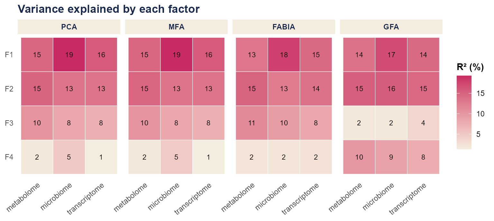
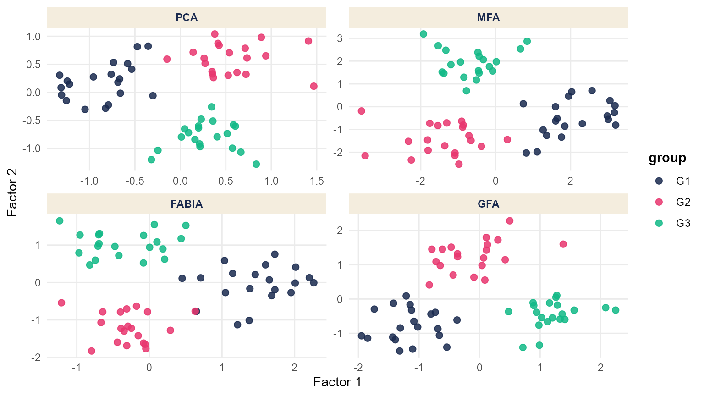
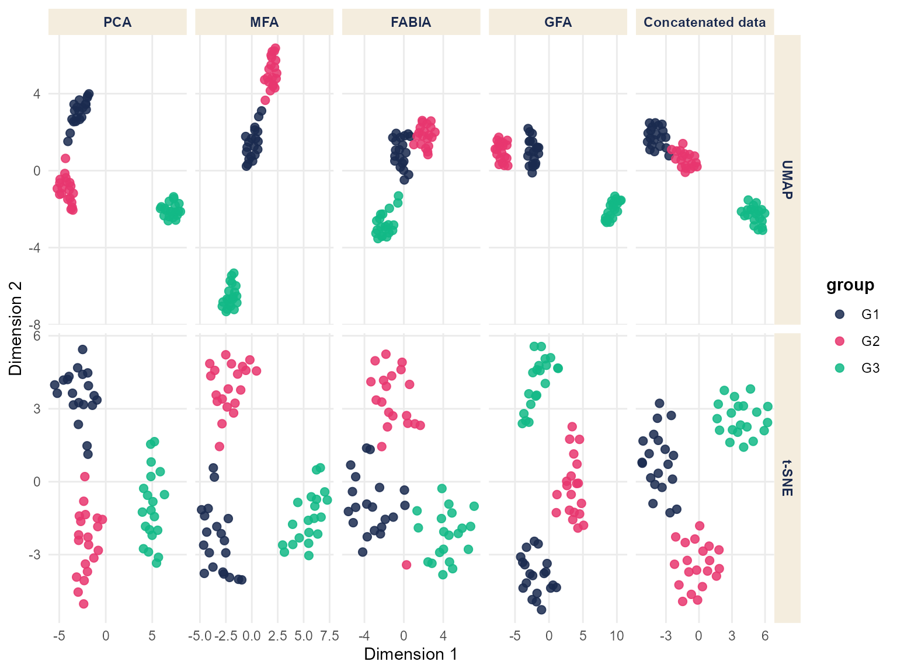
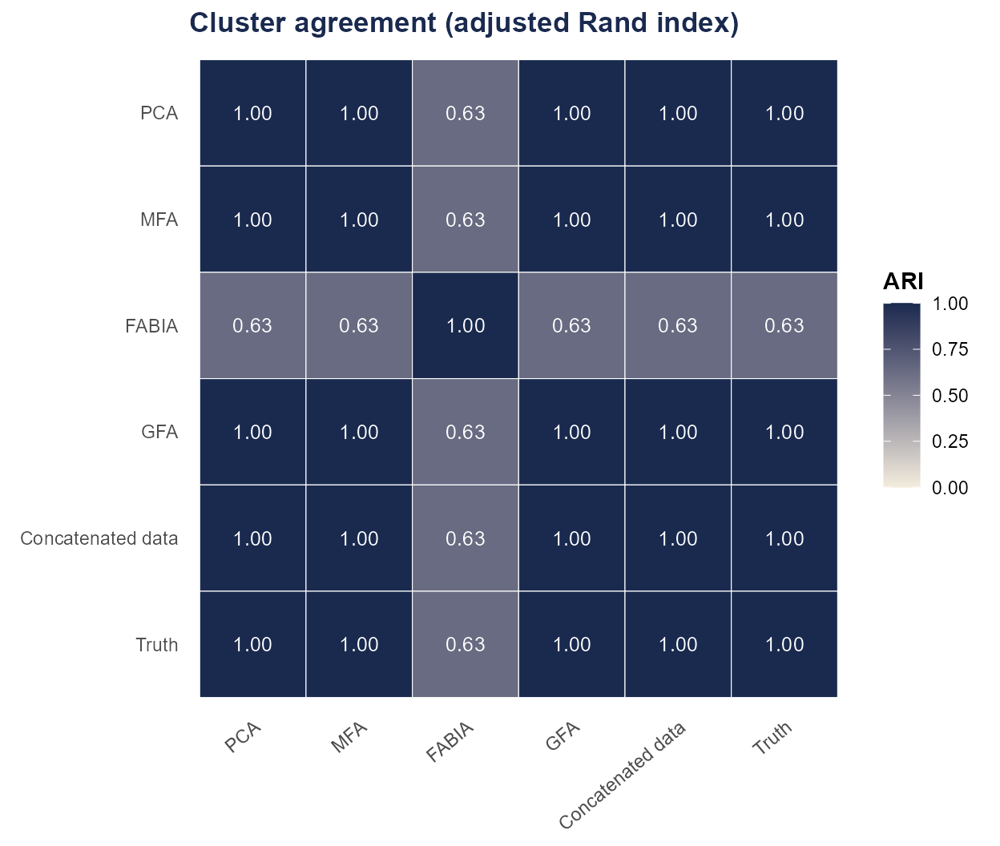
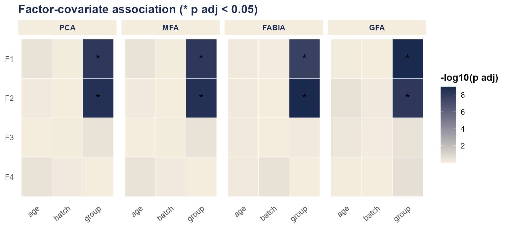
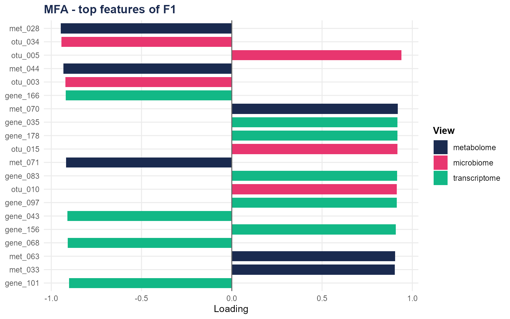
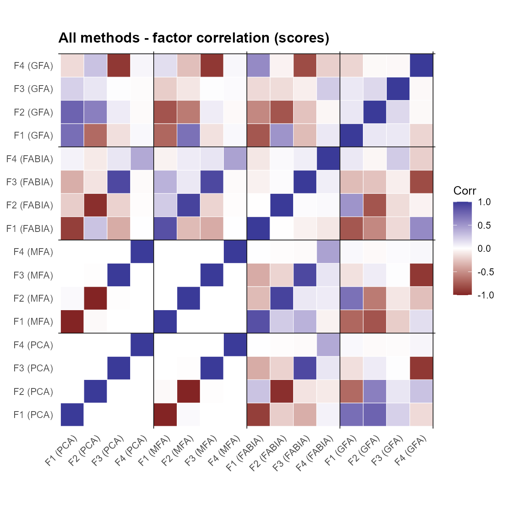

This page walks through a complete multi-omics factor analysis with factomics: fit several factor methods, look at the factors in low-dimensional embeddings, cluster the samples, check which method agrees with which, and find out what each factor means.
1. Data
factomics takes a named list of numeric matrices, features in rows and samples in columns, one matrix per omics layer (“view”). All views must share the same sample names. Here we simulate three views measured on 60 samples from three groups, with a known set of latent factors:
sim <- simulate_multiomics(n_samples = 60, n_groups = 3, seed = 1)
lapply(sim$data, dim)
#> $transcriptome
#> [1] 200 60
#>
#> $metabolome
#> [1] 80 60
#>
#> $microbiome
#> [1] 50 60
head(sim$metadata)
#> sample group batch age
#> 1 S001 G1 B1 37
#> 2 S002 G2 B2 54
#> 3 S003 G3 B1 50
#> 4 S004 G1 B2 63
#> 5 S005 G2 B1 34
#> 6 S006 G3 B2 51See the Using your own data article for reading your own files.
2. Fit factor models
run_factor_pipeline() runs any set of methods and
returns them in one format. list_factor_methods() shows
what is available on your machine:
list_factor_methods()[, c("method", "package", "installed")]
#> method package installed
#> 1 PCA stats TRUE
#> 2 MFA FactoMineR TRUE
#> 3 FABIA fabia TRUE
#> 4 GFA GFA TRUE
#> 5 MOFA MOFA2 TRUE
#> 6 SGCCA mixOmics TRUE
#> 7 JIVE r.jive TRUE
#> 8 RABFA factomics TRUE
res <- run_factor_pipeline(
sim$data,
methods = c("PCA", "MFA", "FABIA", "GFA"),
k = 4,
verbose = FALSE
)
res
#> <factomics_results>
#> 60 samples, 3 view(s): transcriptome (200), metabolome (80), microbiome (50)
#> PCA 4 factors
#> MFA 4 factors
#> FABIA 4 factors
#> GFA 4 factorsEvery method has the same three slots: scores (samples x
factors), loadings (features x factors, named
view::feature) and meta:
head(res$MFA$scores, 3)
#> F1 F2 F3 F4
#> S001 0.8180284 -2.0287189 -0.706567378 1.1308431
#> S002 -0.8647655 -0.8026163 2.469756281 -0.4160932
#> S003 -1.3819616 1.4615157 0.004669615 -0.8113732
head(res$GFA$loadings, 3)
#> F1 F2 F3 F4
#> transcriptome::gene_001 0.43013967 0.2782374 -0.06094158 -0.25114472
#> transcriptome::gene_002 0.48068709 0.3678413 -0.22494974 -0.30241875
#> transcriptome::gene_003 -0.05670652 -0.1134287 0.06211398 -0.028303053. Attach metadata
res <- attach_scores_metadata(res, sim$metadata, sample_col = "sample")
head(res$MFA$scores_with_meta[, c("sample", "F1", "F2", "group")], 3)
#> sample F1 F2 group
#> 1 S001 0.8180284 -2.0287189 G1
#> 2 S002 -0.8647655 -0.8026163 G2
#> 3 S003 -1.3819616 1.4615157 G34. How much does each factor explain?
variance_explained() regresses each view on each
method’s factors, so every method is measured on the same R^2 scale:

5. Look at the factor space
Plot two factors directly, or embed the full factor space with PCA, UMAP or t-SNE. The concatenated input data are embedded too, as a baseline:
plot_factor_scores(res, metadata = sim$metadata, color_by = "group")
emb <- embed_results(res, type = c("umap", "tsne"))
plot_embedding(emb, metadata = sim$metadata, color_by = "group")
6. Cluster the samples
cluster_results() clusters the samples on each method’s
factors and picks the number of clusters by the mean silhouette
width:
cl <- cluster_results(res, cluster_method = "kmeans", k = 2:6)
cl
#> <factomics_clusters>
#> method algorithm k silhouette
#> PCA kmeans 3 0.406
#> MFA kmeans 3 0.408
#> FABIA kmeans 5 0.300
#> GFA kmeans 3 0.349
#> Concatenated data kmeans 3 0.134Because we know the true groups here, we can score each clustering with the adjusted Rand index (1 = perfect):
truth <- setNames(sim$metadata$group, sim$metadata$sample)
compare_clusterings(cl, truth)$vs_truth
#> method ARI
#> 1 PCA 1.0000000
#> 2 MFA 1.0000000
#> 3 FABIA 0.6330688
#> 4 GFA 1.0000000
#> 5 Concatenated data 1.0000000
plot_clusters(cl, "agreement", truth = truth)
7. Interpret the factors
Which factors track the sample covariates?
plot_factor_associations(res, sim$metadata)
Which features drive a factor?
plot_top_loadings(res, "MFA", factor = 1, n = 20)
8. Compare the methods
benchmark_factor_methods() matches factors between every
pair of methods (Hungarian algorithm on the score correlations) and
summarises how well they agree:
bm <- benchmark_factor_methods(res)
bm$summary_table_scores[, c("pair", "mean_abs_corr_scores")]
#> pair mean_abs_corr_scores
#> 1 PCA vs MFA 0.9985171
#> 2 PCA vs FABIA 0.7904234
#> 3 PCA vs GFA 0.5939034
#> 4 MFA vs FABIA 0.7973281
#> 5 MFA vs GFA 0.6039748
#> 6 FABIA vs GFA 0.6539313
bm$all_scores_heatmap
All of it in one call
factomics() chains all of the above and
export_results() writes the tables to disk:
fx <- factomics(sim$data, metadata = sim$metadata,
methods = c("PCA", "MFA", "FABIA", "GFA"), k = 4,
embeddings = c("umap", "tsne"), cluster_method = "kmeans")
export_results(fx, "factomics_output")